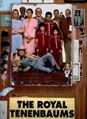

Washington Post - The New Canon
https://www.washingtonpost.com/news/style/wp/2018/08/17/feature/these-are-the-best-movies-of-the-2000s
List contains: 22 items, 40.9 hours.
List contains: 22 items, 40.9 hours.
Stephen Klancher
...has seen 12
...has seen 25.7 hours
...has not seen 15.2 hours

Timeline - Covers
Most Recent:
Michael Clayton
First Unseen:
25th Hour (# 2)
...has seen 12
...has seen 25.7 hours
...has not seen 15.2 hours
Timeline - Covers
Most Recent:
Michael Clayton
First Unseen:
25th Hour (# 2)
1.
Children of Men (2006)
Stephen Klancher: SEEN 
I remember thinking halfway through watching this movie that it had built a very interesting situation. And then it just lost my interest. It built an interesting world though. The death of the worlds youngest person in the beginning immediately grabbed my attention.


5.

Pan's Labyrinth (2006) Releases on 2007-01-19
Stephen Klancher: January 27, 2007
This was disappointing to me because I wanted the whole movie to be like the fantasy scenes on which the trailer focused. Also "Pan's Labyrinth" became a pronouncement of intention to crush a man's face with a bottle as was done in this movie.
6.

There Will Be Blood (2007)
Stephen Klancher: April 17, 2008
Omg he'll drink your milkshake. Really, he'll do it. I think there may have been a good movie here. But all I remember is that he'll drink your milkshake.


10.

Eternal Sunshine of the Spotless Mind (2004) Releases on 1969-12-31
Stephen Klancher: SEEN
I love this movie. Would I zap my brain? Probably. Maybe I already did. How would I know? Whatever. I love this movie.
13.

No Country for Old Men (2007)
Stephen Klancher: November 19, 2007
Wow, this was cool. The ending was kinda like, "wait, what?" but the bad guy Anton was very memorable. "What's the most you ever lost on a coin toss?"
14.
I'm Not There. (2007) Releases on 2007-11-21


21.

The Royal Tenenbaums (2001) Releases on 2001-12-14
22.

Spirited Away (2001) Releases on 2001-07-20
Stephen Klancher: April 6, 2003
I watched with in a theater in Bakersfield with my mom. I don't know if it was a rerelease or late after the release or if this is all they did in Bakersfield, but I seem to remember that it was only playing on this one screen in town and it was an abnormally small one.
I really enjoyed the animation and the fantasy of the whole setting.
I really enjoyed the animation and the fantasy of the whole setting.